Thursday April 13, 2023
“Good code is its own best documentation. As you’re about to add a comment, ask yourself, ‘How can I improve the code so that this comment isn’t needed?’ Improve the code and then document it to make it even clearer.” - Steve McConnell
Removing duplicate events and defining the domain
Functions from the {spatstat} family of packages require the event locations (as a ppp object) and a domain over which the spatial statistics are computed (as an owin object)
If no owin object is specified the default is a rectangular bounding box defined by the northern, southern, eastern, and western most event locations
Consider the Florida wildfire data as a simple feature data frame. Import the Florida wildfire data from here http://myweb.fsu.edu/jelsner/temp/data/FL_Fires.zip as a simple feature data frame called FL_Fires.sf and transform the native CRS to a Florida GDL Albers projected CRS (EPSG 3086).
FL_Fires.sf <- sf::st_read(dsn = here::here("data", "FL_Fires")) |>
sf::st_transform(crs = 3086)## Reading layer `FL_Fires' from data source
## `/Users/jelsner/Desktop/ClassNotes/ASS-2023/data/FL_Fires'
## using driver `ESRI Shapefile'
## Simple feature collection with 90261 features and 37 fields
## Geometry type: POINT
## Dimension: XY
## Bounding box: xmin: -9750382 ymin: 2824449 xmax: -8908899 ymax: 3632749
## Projected CRS: Mercator_2SPKeep only fires occurring in Baker County (west of Jacksonville)
Use the us_counties() function with resolution = "high" from the {USAboundaries} package to get county boundaries in Florida as a simple feature data frame. Then select on the variable name before filtering on the variable name to keep only the boundary of Liberty County. Transform the native CRS to EPSG 3086. Assign the resulting simple feature data frame the name Baker.sf
Baker.sf <- USAboundaries::us_counties(states = "FL",
resolution = "high") |>
dplyr::select(name) |>
dplyr::filter(name == "Baker") |>
sf::st_transform(crs = 3086)Extract the wildfires from FL_Fires.sf that intersect Baker County then filter by lightning and select the fire size variable
BakerFires.sf <- FL_Fires.sf |>
sf::st_intersection(Baker.sf) |>
dplyr::filter(STAT_CAU_1 == "Lightning") |>
dplyr::select(FIRE_SIZE_)## Warning: attribute variables are assumed to be spatially constant throughout
## all geometriesCreate and summarize an unmarked ppp object
library(spatstat)## Loading required package: spatstat.data## Loading required package: spatstat.geom## spatstat.geom 3.0-6## Loading required package: spatstat.random## spatstat.random 3.1-3## Loading required package: spatstat.explore## Loading required package: nlme## spatstat.explore 3.0-6## Loading required package: spatstat.model## Loading required package: rpart## spatstat.model 3.1-2## Loading required package: spatstat.linnet## spatstat.linnet 3.0-4##
## spatstat 3.0-3
## For an introduction to spatstat, type 'beginner'BF.ppp <- BakerFires.sf |>
as.ppp() |>
unmark()
BF.ppp |>
summary()## Planar point pattern: 327 points
## Average intensity 1.801742e-07 points per square unit
##
## *Pattern contains duplicated points*
##
## Coordinates are given to 2 decimal places
## i.e. rounded to the nearest multiple of 0.01 units
##
## Window: rectangle = [548071.4, 587567.5] x [682872.2, 728823.8] units
## (39500 x 45950 units)
## Window area = 1814910000 square unitsThere are 327 events (wildfires). This is an average intensity of 18 wildfires per 10 square km (.18 X 100 = 18). The pattern also contains duplicated events
The average intensity is based on a square domain
BF.ppp |>
plot()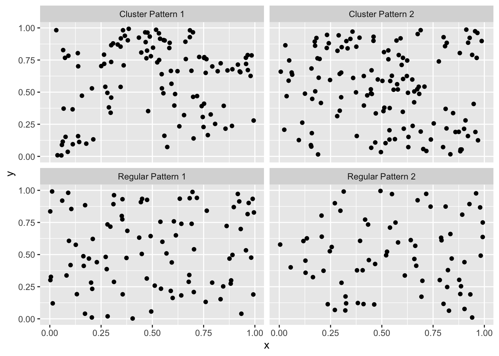
The lack of events in the northeast part of the domain is because you previously removed wildfires outside the county border
Further there are duplicated events. Events are duplicated if their locations x,y coordinates are the same, and their marks are the same. Whether you remove them depends on your knowledge of what they are and how the data were collected
Here you remove duplicate events with the unique() function. You then create a window (W) from the Baker.sf simple feature data frame and subset the BF.ppp object by that window
BF.ppp <- BF.ppp |>
unique()
W <- Baker.sf |>
as.owin()
BF.ppp <- BF.ppp[W]
BF.ppp <- BF.ppp |>
rescale(s = 1000,
unitname = "km")
BF.ppp |>
plot()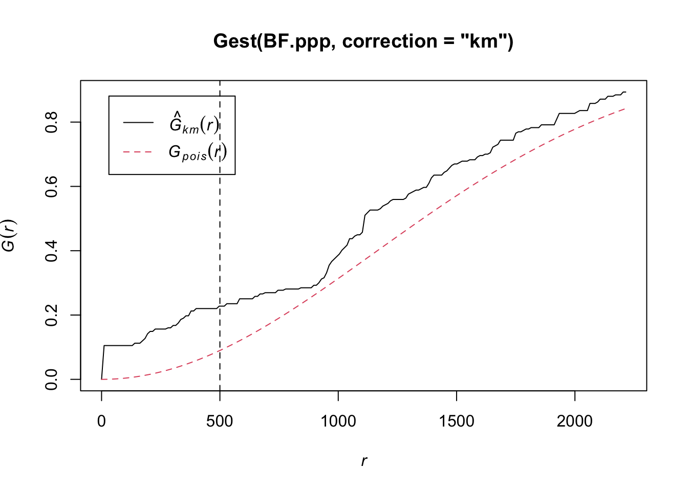
Summarize the resulting ppp object.
BF.ppp |>
summary()## Planar point pattern: 322 points
## Average intensity 0.2111427 points per square km
##
## Coordinates are given to 5 decimal places
##
## Window: polygonal boundary
## single connected closed polygon with 109 vertices
## enclosing rectangle: [547.5882, 587.6825] x [681.9546, 731.6515] km
## (40.09 x 49.7 km)
## Window area = 1525.04 square km
## Unit of length: 1 km
## Fraction of frame area: 0.765Now the average intensity is 21 wildfires per 10 square kilometers, which is a better estimate of the wildfire occurrence rates at the county level
Determining statistical significance of clustering
With event distance functions like G, F, and K computed on ppp objects from the {statspat} family of packages, the default plot method is to show a black curve and a red curve. The black curve is the function computed from the data and the red curve is the function computed from a model of CSR
When you see a separation between the black and red curve, you should ask “Is this separation large relative to sampling variation?” Said another way. Is the difference between the empirical and theoretical distance curves large enough to conclude there is significant clustering?
There are two ways to approach statistical inference
Compare the curve computed with the observed data against curves computed with data generated under the null hypothesis and ask: “does the curve fall outside the envelope of curves from the null cases?”
Get estimates of uncertainty on the curve and ask: “does the uncertainty interval contain the null curve?”
With the first approach you take a ppp object and then compute the curve of interest (e.g., Ripley’s K) for a specified number of samples under the null hypothesis of a homogeneous Poisson process
Returning again to the Kansas tornado reports since 1994
Torn.sf <- sf::st_read(dsn = here::here("data",
"1950-2021-torn-initpoint")) |>
sf::st_transform(crs = 3082) |>
dplyr::filter(mag >= 0, yr >= 1994) |>
dplyr::mutate(EF = as.factor(mag)) |>
dplyr::select(EF)## Reading layer `1950-2021-torn-initpoint' from data source
## `/Users/jelsner/Desktop/ClassNotes/ASS-2023/data/1950-2021-torn-initpoint'
## using driver `ESRI Shapefile'
## Simple feature collection with 67558 features and 22 fields
## Geometry type: POINT
## Dimension: XY
## Bounding box: xmin: -163.53 ymin: 17.7212 xmax: -64.7151 ymax: 61.02
## Geodetic CRS: WGS 84T.ppp <- Torn.sf["EF"] |>
as.ppp()
KS.sf <- USAboundaries::us_states(states = "Kansas") |>
sf::st_transform(crs = sf::st_crs(Torn.sf)$proj4string)
W <- KS.sf |>
as.owin()
T.ppp <- T.ppp[W] |>
rescale(s = 1000,
unitname = "km")To make things run faster you consider a subset of all the tornadoes (those that have an EF rating of 2 or higher). You create a new ppp object that contains only tornadoes rated at least EF2. Since the marks is a factor vector you can’t use >=
ST.ppp <- T.ppp[T.ppp$marks == 2 |
T.ppp$marks == 3 |
T.ppp$marks == 4 |
T.ppp$marks == 5] |>
unmark()Plot a map displaying the local intensity and include the event locations. The plot() method applied to the output of the density() function and applied to the ppp object will produce such a map
ST.ppp |>
density() |>
plot()
plot(ST.ppp,
pch = '.',
add = TRUE)
Compute the nearest neighbor function (\(G\)) using the Gest() function with a Kaplan-Meier correction for the borders (i.e., correction = "km"). Make a plot of this function that also includes a theoretical curve under the null hypothesis of complete spatial randomness. From the plot eyeball an estimate of the percentage of tornadoes there are within 15 km of another tornado
ST.ppp |>
Gest(correction = "km") |>
plot()
abline(v = 15,
col = "black",
lty = 2)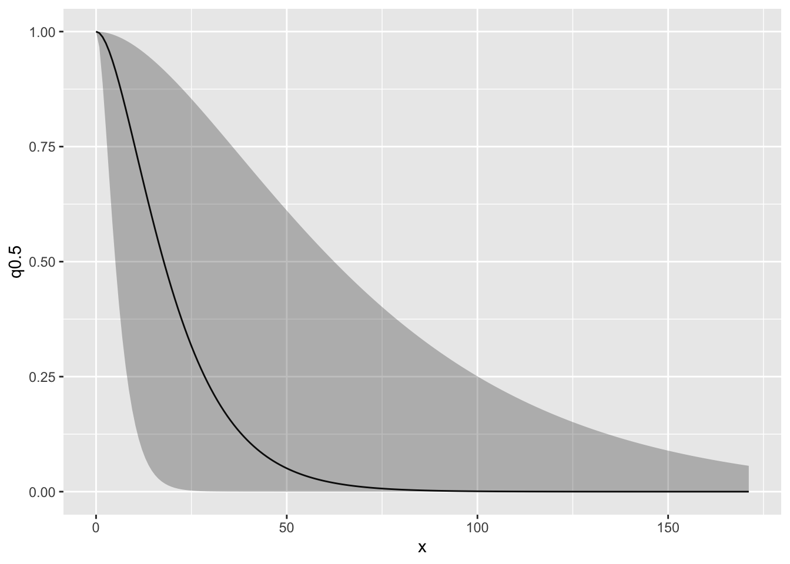
Alternatively you can examine the case for clustering using the autocorrelation function (\(K\)). Here you compute the autocorrelation function with the Kest() function using the border correction method of Ripley (correction = "Ripley"). You convert the output to a data frame with the as.data.frame() function
K.df <- ST.ppp |>
Kest(correction = "Ripley") |>
as.data.frame()
head(K.df)## r theo iso
## 1 0.0000000 0.00000000 0.00000
## 2 0.1677738 0.08842974 12.95845
## 3 0.3355477 0.35371897 12.95845
## 4 0.5033215 0.79586769 12.95845
## 5 0.6710954 1.41487589 12.95845
## 6 0.8388692 2.21074358 12.95845The resulting data frame contains values for distance (r), the model (theo) and the border-corrected data estimates (iso)
You then multiply the estimates from the data and from the model by the average intensity and send the output to ggplot() where you map the distance to the x aesthetic and the K estimates to the y aesthetic
library(ggplot2)
K.df |>
dplyr::mutate(Kdata = iso * intensity(ST.ppp),
Kpois = theo * intensity(ST.ppp)) |>
ggplot(mapping = aes(x = r, y = Kdata)) +
geom_line() +
geom_line(mapping = aes(y = Kpois), color = "red") +
geom_vline(xintercept = 50, color = "blue") +
xlab("Lag distance (km)") + ylab("K(r) * lambda") +
ggtitle(label = "Expected number of additional tornadoes within a distance r of any tornado") +
theme_minimal()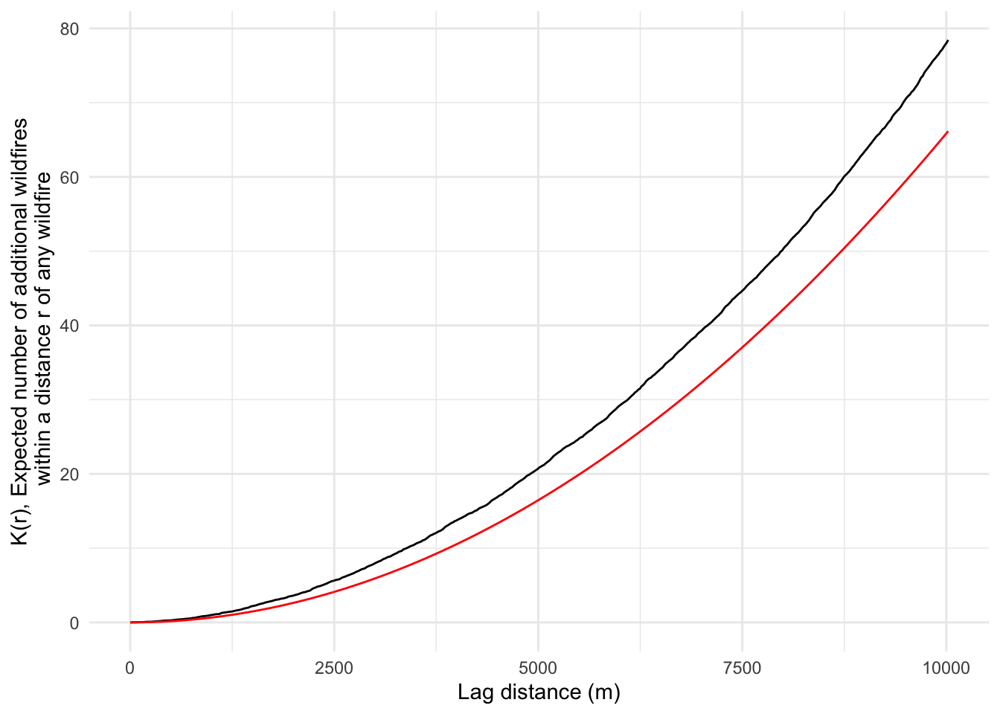
If the tornadoes were CSR we would expect about 6 additional tornadoes within a distance of 50 km from any tornado. We see that at this distance there are about 10 additional tornadoes
The above plots of \(G\) and \(K\) show differences between the curve computed from the data and the curve computed from the null hypothesis model for CSR
Is this difference significant? Or more precisely, how much evidence is there in support of the null hypothesis of CSR?
The envelope() method from the {spatstat} family of packages is used to help answer this question. You specify the function with the fun = Kest argument and the number of samples with the nsim = argument
You then convert the output to a data frame. It takes a few seconds to complete the computation of \(K\) for all 99 samples
Kenv.df <- envelope(ST.ppp,
fun = Kest,
nsim = 99) |>
as.data.frame()## Generating 99 simulations of CSR ...
## 1, 2, 3, 4, 5, 6, 7, 8, 9, 10, 11, 12, 13, 14, 15, 16, 17, 18, 19, 20, 21, 22, 23, 24, 25, 26, 27, 28, 29, 30, 31, 32, 33, 34, 35, 36, 37, 38, 39, 40,
## 41, 42, 43, 44, 45, 46, 47, 48, 49, 50, 51, 52, 53, 54, 55, 56, 57, 58, 59, 60, 61, 62, 63, 64, 65, 66, 67, 68, 69, 70, 71, 72, 73, 74, 75, 76, 77, 78, 79, 80,
## 81, 82, 83, 84, 85, 86, 87, 88, 89, 90, 91, 92, 93, 94, 95, 96, 97, 98, 99.
##
## Done.head(Kenv.df)## r obs theo lo hi
## 1 0.0000000 0.00000 0.00000000 0 0.00000
## 2 0.1677738 12.95845 0.08842974 0 12.14663
## 3 0.3355477 12.95845 0.35371897 0 13.10164
## 4 0.5033215 12.95845 0.79586769 0 13.10164
## 5 0.6710954 12.95845 1.41487589 0 26.20328
## 6 0.8388692 12.95845 2.21074358 0 26.20328The resulting data frame contains estimates of \(K\) as a function of lag distance (r) (column labeled obs). It also has the estimates of \(K\) as a function of lag distance under the null hypothesis of CSR (theo) and the lowest (lo) and highest (hi) values of \(K\) across the 99 samples
You plot this information using the geom_ribbon() layer. This adds a gray ribbon around the model for CSR
ggplot(data = Kenv.df,
mapping = aes(x = r, y = obs * intensity(ST.ppp))) +
geom_ribbon(mapping = aes(ymin = lo * intensity(ST.ppp),
ymax = hi * intensity(ST.ppp)),
fill = "gray70") +
geom_line() +
geom_line(aes(y = theo * intensity(ST.ppp)), color = "red") +
xlab("Lag distance (km)") + ylab("K(r) * lambda") +
theme_minimal()
Again the black line is the \(K\) function computed on the tornado report locations data and the red line is the same function under CSR. The uncertainty ribbon (gray band) connects the point-wise minimum and maximum values of the \(K\) curves computed from the 99 generated point pattern samples
Since the black line lies outside the gray band you can confidently conclude that the tornado reports are more clustered than one would expect by chance
To directly test the null hypothesis of CSR you need a statistic indicating the departure of \(K\) (or any other distance curve) computed on the observations from the theoretical \(K\)
One statistic is the maximum absolute deviation (MAD) implemented with the mad.test() function from the {spatstat} family of packages. The function performs a hypothesis test for the null hypothesis that point pattern is CSR. The larger the value of the statistic, the less likely it is that the data are CSR and the evidence in support of the null is given by the \(p\) value on that statistic.
Here you use the test on the \(G\) function with the fun = Gest argument and 999 simulations
mad.test(ST.ppp,
fun = Gest,
nsim = 999)## Generating 999 simulations of CSR ...
## 1, 2, 3, ......10.........20.........30.........40.........50.........60........
## .70.........80.........90.........100.........110.........120.........130......
## ...140.........150.........160.........170.........180.........190.........200....
## .....210.........220.........230.........240.........250.........260.........270..
## .......280.........290.........300.........310.........320.........330.........340
## .........350.........360.........370.........380.........390.........400........
## .410.........420.........430.........440.........450.........460.........470......
## ...480.........490.........500.........510.........520.........530.........540....
## .....550.........560.........570.........580.........590.........600.........610..
## .......620.........630.........640.........650.........660.........670.........680
## .........690.........700.........710.........720.........730.........740........
## .750.........760.........770.........780.........790.........800.........810......
## ...820.........830.........840.........850.........860.........870.........880....
## .....890.........900.........910.........920.........930.........940.........950..
## .......960.........970.........980.........990........ 999.
##
## Done.##
## Maximum absolute deviation test of CSR
## Monte Carlo test based on 999 simulations
## Summary function: G(r)
## Reference function: theoretical
## Alternative: two.sided
## Interval of distance values: [0, 65.7378018120781] km
## Test statistic: Maximum absolute deviation
## Deviation = observed minus theoretical
##
## data: ST.ppp
## mad = 0.20482, rank = 3, p-value = 0.003The maximum absolute deviation is about .2 (largest difference in proportion of events within a given distance of an other event between the data and the model)
The value is relative large on the scale from 0 to 1 so the \(p\)-value is small and you reject the null hypothesis of CSR for these data. This is consistent with the evidence gleaned from the graph. Note: Since there are 999 simulations the lowest the \(p\)-value can be is .001
Another test statistic is related to the sum of the squared deviations between the estimated and theoretical functions. It is implemented with the dclf.test() function
dclf.test(ST.ppp,
fun = Gest,
nsim = 999)## Generating 999 simulations of CSR ...
## 1, 2, 3, ......10.........20.........30.........40.........50.........60........
## .70.........80.........90.........100.........110.........120.........130......
## ...140.........150.........160.........170.........180.........190.........200....
## .....210.........220.........230.........240.........250.........260.........270..
## .......280.........290.........300.........310.........320.........330.........340
## .........350.........360.........370.........380.........390.........400........
## .410.........420.........430.........440.........450.........460.........470......
## ...480.........490.........500.........510.........520.........530.........540....
## .....550.........560.........570.........580.........590.........600.........610..
## .......620.........630.........640.........650.........660.........670.........680
## .........690.........700.........710.........720.........730.........740........
## .750.........760.........770.........780.........790.........800.........810......
## ...820.........830.........840.........850.........860.........870.........880....
## .....890.........900.........910.........920.........930.........940.........950..
## .......960.........970.........980.........990........ 999.
##
## Done.##
## Diggle-Cressie-Loosmore-Ford test of CSR
## Monte Carlo test based on 999 simulations
## Summary function: G(r)
## Reference function: theoretical
## Alternative: two.sided
## Interval of distance values: [0, 65.7378018120781] km
## Test statistic: Integral of squared absolute deviation
## Deviation = observed minus theoretical
##
## data: ST.ppp
## u = 0.38069, rank = 1, p-value = 0.001Again the \(p\)-value on the test statistic against the two-sided alternative is small (less than .01) so you reject the null hypothesis of CSR
Compare these test results on tornado report clustering with test results on pine sapling clustering in the swedishpines data set
SP <- swedishpines
Kenv.df <- envelope(SP,
fun = Kest,
nsim = 999) |>
as.data.frame()## Generating 999 simulations of CSR ...
## 1, 2, 3, ......10.........20.........30.........40.........50.........60........
## .70.........80.........90.........100.........110.........120.........130......
## ...140.........150.........160.........170.........180.........190.........200....
## .....210.........220.........230.........240.........250.........260.........270..
## .......280.........290.........300.........310.........320.........330.........340
## .........350.........360.........370.........380.........390.........400........
## .410.........420.........430.........440.........450.........460.........470......
## ...480.........490.........500.........510.........520.........530.........540....
## .....550.........560.........570.........580.........590.........600.........610..
## .......620.........630.........640.........650.........660.........670.........680
## .........690.........700.........710.........720.........730.........740........
## .750.........760.........770.........780.........790.........800.........810......
## ...820.........830.........840.........850.........860.........870.........880....
## .....890.........900.........910.........920.........930.........940.........950..
## .......960.........970.........980.........990........ 999.
##
## Done.ggplot(data = Kenv.df,
mapping = aes(x = r * .1, y = obs * intensity(SP))) +
geom_ribbon(aes(ymin = lo * intensity(SP),
ymax = hi * intensity(SP)),
fill = "gray70") +
geom_line() + geom_line(aes(y = theo * intensity(SP)),
color = "red") +
xlab("Lag distance (m)") +
ylab("K(r), Expected number of additional saplings\n within a distance r of a sapling") +
theme_minimal()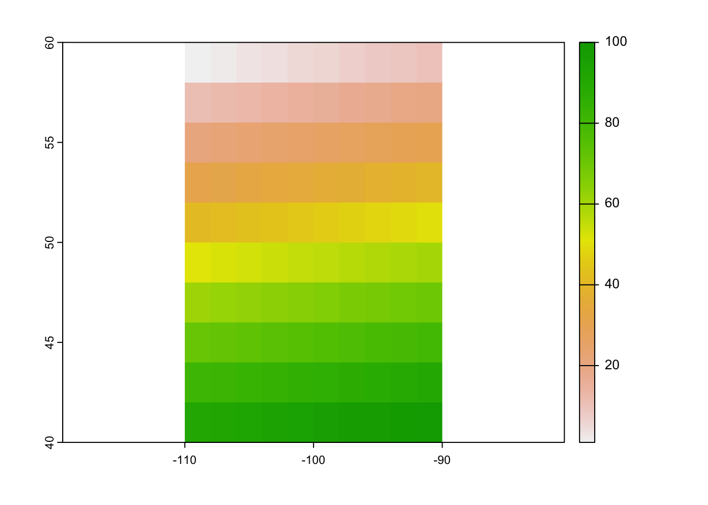
At short distances (closer than about 1 m) the black line is below the red line and just outside the gray ribbon which you interpret to mean that there are fewer pine saplings near other pine saplings than would be expected by chance at this scale. This ‘regularity’ might be the result of competition among the saplings
At larger distances the black line is close to the red line and inside the gray ribbon which you interpret to mean that, at this larger spatial scale, the distribution of pine saplings is indistinguishable from CSR
Based on the fact that most of the black line is within the gray envelope you might anticipate that a formal test of the null hypothesis of CSR will likely fail
MAD test
mad.test(SP,
fun = Kest,
nsim = 999)## Generating 999 simulations of CSR ...
## 1, 2, 3, ......10.........20.........30.........40.........50.........60........
## .70.........80.........90.........100.........110.........120.........130......
## ...140.........150.........160.........170.........180.........190.........200....
## .....210.........220.........230.........240.........250.........260.........270..
## .......280.........290.........300.........310.........320.........330.........340
## .........350.........360.........370.........380.........390.........400........
## .410.........420.........430.........440.........450.........460.........470......
## ...480.........490.........500.........510.........520.........530.........540....
## .....550.........560.........570.........580.........590.........600.........610..
## .......620.........630.........640.........650.........660.........670.........680
## .........690.........700.........710.........720.........730.........740........
## .750.........760.........770.........780.........790.........800.........810......
## ...820.........830.........840.........850.........860.........870.........880....
## .....890.........900.........910.........920.........930.........940.........950..
## .......960.........970.........980.........990........ 999.
##
## Done.##
## Maximum absolute deviation test of CSR
## Monte Carlo test based on 999 simulations
## Summary function: K(r)
## Reference function: theoretical
## Alternative: two.sided
## Interval of distance values: [0, 24] units (one unit = 0.1 metres)
## Test statistic: Maximum absolute deviation
## Deviation = observed minus theoretical
##
## data: SP
## mad = 150.69, rank = 213, p-value = 0.213DCLF test.
dclf.test(SP,
fun = Kest,
nsim = 999)## Generating 999 simulations of CSR ...
## 1, 2, 3, ......10.........20.........30.........40.........50.........60........
## .70.........80.........90.........100.........110.........120.........130......
## ...140.........150.........160.........170.........180.........190.........200....
## .....210.........220.........230.........240.........250.........260.........270..
## .......280.........290.........300.........310.........320.........330.........340
## .........350.........360.........370.........380.........390.........400........
## .410.........420.........430.........440.........450.........460.........470......
## ...480.........490.........500.........510.........520.........530.........540....
## .....550.........560.........570.........580.........590.........600.........610..
## .......620.........630.........640.........650.........660.........670.........680
## .........690.........700.........710.........720.........730.........740........
## .750.........760.........770.........780.........790.........800.........810......
## ...820.........830.........840.........850.........860.........870.........880....
## .....890.........900.........910.........920.........930.........940.........950..
## .......960.........970.........980.........990........ 999.
##
## Done.##
## Diggle-Cressie-Loosmore-Ford test of CSR
## Monte Carlo test based on 999 simulations
## Summary function: K(r)
## Reference function: theoretical
## Alternative: two.sided
## Interval of distance values: [0, 24] units (one unit = 0.1 metres)
## Test statistic: Integral of squared absolute deviation
## Deviation = observed minus theoretical
##
## data: SP
## u = 106917, rank = 169, p-value = 0.169Both return a \(p\)-value that is greater than .15 so you fail to reject the null hypothesis of CSR
The other approach to inference is to use the procedure of re-sampling. Re-sampling refers to generating samples from the observed data while sampling refers to generating samples from a theoretical model
The bootstrap procedure is a re-sampling strategy whereby new samples are generated from the data by randomly choosing events within the domain with replacement. An event that is chosen for the ‘bootstrap’ sample gets the chance to be chosen again (called ‘with replacement’). The number of events in each bootstrap sample should equal the number of events in the data
Consider 15 numbers from 1 to 15. Then pick from that set of numbers with replacement until the sample size is 15 to create a bootstrap sample
( x <- 1:15 )## [1] 1 2 3 4 5 6 7 8 9 10 11 12 13 14 15x |>
sample(replace = TRUE)## [1] 2 9 9 2 11 7 11 2 1 12 1 10 1 1 13Some numbers get picked more than once and some do not get picked at all
The average of the original 15 x values is 8 but the average over the set of numbers in the bootstrap sample will not necessarily be 8. However, the distribution of the averages over many bootstrap samples will be centered close to this average
mx <- NULL
for(i in 1:999){
mx[i] <- mean(sample(x, replace = TRUE))
}
mx.df <- as.data.frame(mx)
ggplot(data = mx.df,
mapping = aes(mx)) +
geom_density() +
geom_vline(xintercept = mean(x),
color = "red")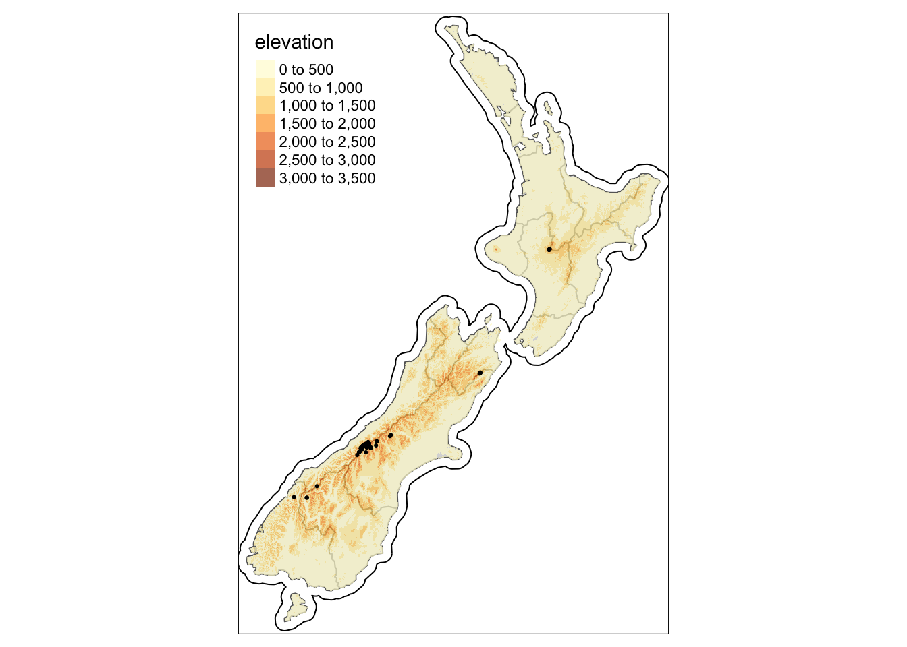
The important thing is that the bootstrap distribution provides an estimate of the uncertainty on the computed mean through the range of possible average values
In this way, the lohboot() function estimates the uncertainty on the computed spatial statistic using a bootstrap procedure. It works by computing a local version of the function (e.g., localK()) on the set of re-sampled events
Kboot.df <- ST.ppp |>
lohboot(fun = Kest) |>
as.data.frame()## 1, 2, 3, 4.6.8.10.12.14.16.18.20.22.24.26.28.30.32.34.36.38.40
## .42.44.46.48.50.52.54.56.58.60.62.64.66.68.70.72.74.76.78.80
## .82.84.86.88.90.92.94.96.98.100.102.104.106.108.110.112.114.116.118.120
## .122.124.126.128.130.132.134.136.138.140.142.144.146.148.150.152.154.156.158.160
## .162.164.166.168.170.172.174.176.178.180.182 183.ggplot(data = Kboot.df,
mapping = aes(x = r, y = iso * intensity(ST.ppp))) +
geom_ribbon(aes(ymin = lo * intensity(ST.ppp),
ymax = hi * intensity(ST.ppp)), fill = "gray70") +
geom_line() +
geom_line(aes(y = theo * intensity(ST.ppp)), color = "red") +
xlab("Lag distance (km)") + ylab("K(r)") +
theme_minimal()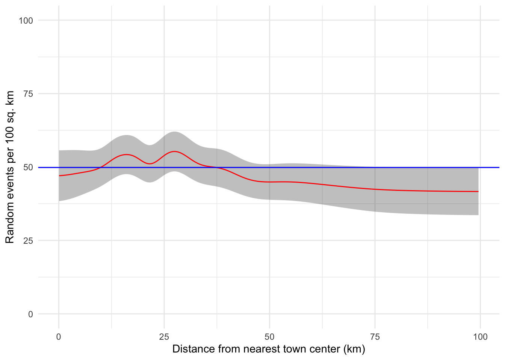
The uncertainty band is plotted about the black line (\(K\) curve computed from the observations) rather than about the null model (red line). The 95% uncertainty band does to include the CSR model so you confidently conclude that the tornadoes in Kansas are more clustered than chance
Repeat by computing the uncertainty estimate for the Swedish pine saplings
Kboot.df <- SP |>
lohboot(fun = Kest) |>
as.data.frame()## 1, 2, 3, 4, 5, 6, 7, 8, 9, 10, 11, 12, 13, 14, 15, 16, 17, 18, 19, 20, 21, 22, 23, 24, 25, 26, 27, 28, 29, 30, 31, 32, 33, 34, 35, 36, 37, 38, 39, 40,
## 41, 42, 43, 44, 45, 46, 47, 48, 49, 50, 51, 52, 53, 54, 55, 56, 57, 58, 59, 60, 61, 62, 63, 64, 65, 66, 67, 68, 69, 70, 71.ggplot(Kboot.df, aes(x = r * .1, y = iso * intensity(SP))) +
geom_ribbon(aes(ymin = lo * intensity(SP),
ymax = hi * intensity(SP)), fill = "gray70") +
geom_line() +
geom_line(aes(y = theo * intensity(SP)), color = "blue", lty = 'dashed') +
xlab("Lag distance (m)") + ylab("K(r)") +
theme_minimal()
At short distances (closer than about 1.5 m) the gray ribbon is below the blue line which you interpret to mean that there are fewer pine saplings near other pine saplings than would be expected by chance at this scale indicating regularity
Estimating clustering in multi-type event locations
Often the interest is on whether the occurrence of one event type influences (or is influenced by) another event type. For example, does the occurrence of one species of tree influence the occurrence of another species of tree?
Analogues to the \(G\) and \(K\) functions are available for ‘multi-type’ point patterns where the marks are factors
A commonly-used statistic for examining ‘cross correlation’ of event type occurrences is the cross K function \(K_{ij}(r)\), which estimates the expected number of events of type \(j\) within a distance \(r\) of type \(i\)
Consider the data called lansing from {spatstat} that contains the locations of 2,251 trees of various species in a wooded lot in Lansing, MI as a ppp object
data(lansing)
lansing |>
summary()## Marked planar point pattern: 2251 points
## Average intensity 2251 points per square unit (one unit = 924 feet)
##
## *Pattern contains duplicated points*
##
## Coordinates are given to 3 decimal places
## i.e. rounded to the nearest multiple of 0.001 units (one unit = 924 feet)
##
## Multitype:
## frequency proportion intensity
## blackoak 135 0.05997335 135
## hickory 703 0.31230560 703
## maple 514 0.22834300 514
## misc 105 0.04664594 105
## redoak 346 0.15370950 346
## whiteoak 448 0.19902270 448
##
## Window: rectangle = [0, 1] x [0, 1] units
## Window area = 1 square unit
## Unit of length: 924 feetThe data are a multi-type planar point pattern with the marks indicating tree species. There are 135 black oaks, 703 hickories, etc. The spatial unit is 924 feet
Compute and plot the cross \(K_{i,j}\) function using i = Maple and j = Hickory events
Kc.df <- lansing |>
Kcross(i = "maple",
j = "hickory") |>
as.data.frame()
ggplot(data = Kc.df,
mapping = aes(x = r, y = iso)) +
geom_line() +
geom_line(aes(y = theo), color = "red") +
geom_vline(xintercept = .2, lty = 'dashed') +
geom_hline(yintercept = .093, lty = 'dashed') +
geom_hline(yintercept = .125, lty = 'dashed') +
xlab("Distance") + ylab("Kc(r)") +
theme_minimal()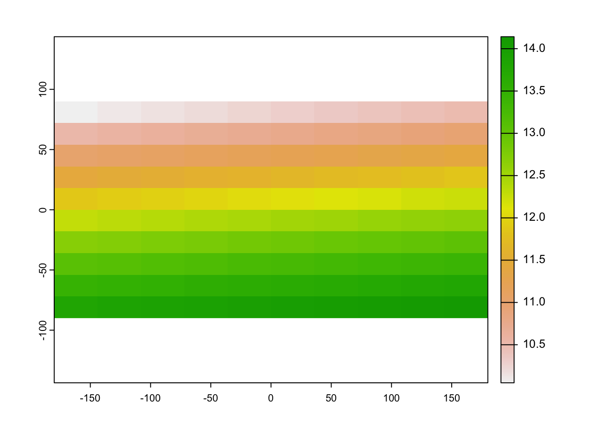
The vertical axis is the number of hickory trees within a radius r of a maple tree divided by the average intensity of the hickories. So at a distance of .2 (.2 x 924 ft = 180 ft) from a random maple there is an average of roughly 65 hickories (.093 x 703 hickories). If hickory and maple trees are CSR you would expect about 88 maples (.125 x 703) within that distance
The presence of a hickory tree reduces the likelihood that a maple tree is nearby
Make the same plots for the EF1 and EF3 tornadoes in Kansas
Using {base} R
T.ppp |>
Kcross(i = "1",
j = "3") |>
plot()
abline(v = 70)
abline(h = 18700)
abline(h = 15500)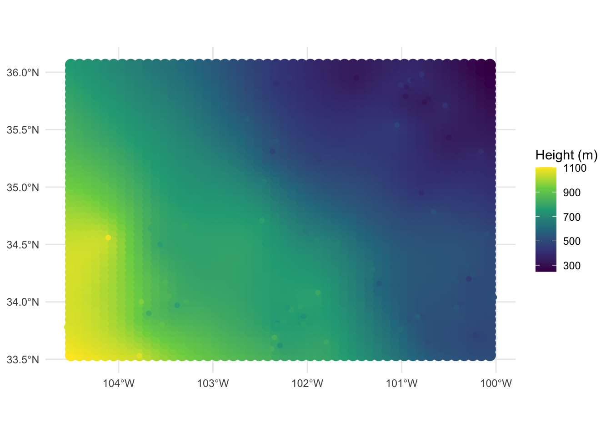
Using {ggplot} syntax
T.ppp |>
Kcross(i = "1",
j = "3") |>
as.data.frame() |>
ggplot(mapping = aes(x = r, y = iso)) +
geom_line() +
geom_line(aes(y = theo), color = "red") +
geom_vline(xintercept = 70, lty = 'dashed') +
geom_hline(yintercept = 18700, lty = 'dashed') +
geom_hline(yintercept = 15500, lty = 'dashed') +
xlab("Distance") + ylab("Kc(r)") +
theme_minimal()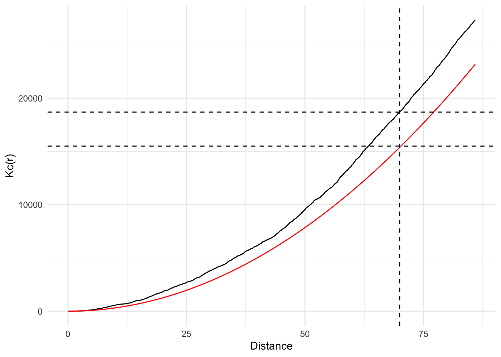
The vertical axis is the number of EF3 tornadoes within a radius r of an EF1 tornado divided by the average intensity of the EF3 tornadoes. At a distance of 70 km from a random EF1 tornado there are on average 18500 x .000296 = 5.5 EF3 tornadoes. If EF1 and EF3 tornadoes are CSR then you would expect, on average, somewhat fewer EF3 tornadoes in the vicinity of EF1 tornadoes (15500 x .000296 = 4.6)
You can see this more clearly using the envelope() function with the fun = Kross. You first use the subset() method with drop = TRUE to make a new ppp object with only those two groups
T.ppp13 <- subset(T.ppp,
marks == "1" |
marks == "3",
drop = TRUE)
T.ppp13 |>
envelope(fun = Kcross,
nsim = 99) |>
as.data.frame() |>
ggplot(mapping = aes(x = r, y = obs)) +
geom_ribbon(aes(ymin = lo, ymax = hi), fill = "gray70") +
geom_line() +
geom_line(aes(y = theo), color = "red", lty = 'dashed') +
xlab("Lag distance (km)") + ylab("Kc(r)") +
theme_minimal()## Generating 99 simulations of CSR ...
## 1, 2, 3, 4, 5, 6, 7, 8, 9, 10, 11, 12, 13, 14, 15, 16, 17, 18, 19, 20, 21, 22, 23, 24, 25, 26, 27, 28, 29, 30, 31, 32, 33, 34, 35, 36, 37, 38, 39, 40,
## 41, 42, 43, 44, 45, 46, 47, 48, 49, 50, 51, 52, 53, 54, 55, 56, 57, 58, 59, 60, 61, 62, 63, 64, 65, 66, 67, 68, 69, 70, 71, 72, 73, 74, 75, 76, 77, 78, 79, 80,
## 81, 82, 83, 84, 85, 86, 87, 88, 89, 90, 91, 92, 93, 94, 95, 96, 97, 98, 99.
##
## Done.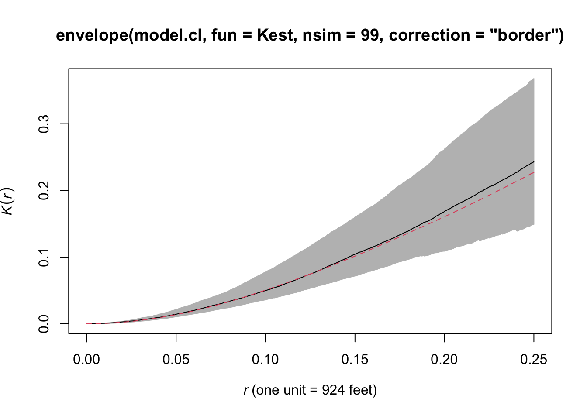
And you formally test as before using the mad.test() function
T.ppp13 |>
mad.test(fun = Kcross,
nsim = 99)## Generating 99 simulations of CSR ...
## 1, 2, 3, 4, 5, 6, 7, 8, 9, 10, 11, 12, 13, 14, 15, 16, 17, 18, 19, 20, 21, 22, 23, 24, 25, 26, 27, 28, 29, 30, 31, 32, 33, 34, 35, 36, 37, 38, 39, 40,
## 41, 42, 43, 44, 45, 46, 47, 48, 49, 50, 51, 52, 53, 54, 55, 56, 57, 58, 59, 60, 61, 62, 63, 64, 65, 66, 67, 68, 69, 70, 71, 72, 73, 74, 75, 76, 77, 78, 79, 80,
## 81, 82, 83, 84, 85, 86, 87, 88, 89, 90, 91, 92, 93, 94, 95, 96, 97, 98, 99.
##
## Done.##
## Maximum absolute deviation test of CSR
## Monte Carlo test based on 99 simulations
## Summary function: "K"["1", "3"](r)
## Reference function: theoretical
## Alternative: two.sided
## Interval of distance values: [0, 85.9002061907829] km
## Test statistic: Maximum absolute deviation
## Deviation = observed minus theoretical
##
## data: T.ppp13
## mad = 4861.9, rank = 1, p-value = 0.01Or the dclf.test() function
T.ppp13 |>
dclf.test(fun = Kcross,
nsim = 99)## Generating 99 simulations of CSR ...
## 1, 2, 3, 4, 5, 6, 7, 8, 9, 10, 11, 12, 13, 14, 15, 16, 17, 18, 19, 20, 21, 22, 23, 24, 25, 26, 27, 28, 29, 30, 31, 32, 33, 34, 35, 36, 37, 38, 39, 40,
## 41, 42, 43, 44, 45, 46, 47, 48, 49, 50, 51, 52, 53, 54, 55, 56, 57, 58, 59, 60, 61, 62, 63, 64, 65, 66, 67, 68, 69, 70, 71, 72, 73, 74, 75, 76, 77, 78, 79, 80,
## 81, 82, 83, 84, 85, 86, 87, 88, 89, 90, 91, 92, 93, 94, 95, 96, 97, 98, 99.
##
## Done.##
## Diggle-Cressie-Loosmore-Ford test of CSR
## Monte Carlo test based on 99 simulations
## Summary function: "K"["1", "3"](r)
## Reference function: theoretical
## Alternative: two.sided
## Interval of distance values: [0, 85.9002061907829] km
## Test statistic: Integral of squared absolute deviation
## Deviation = observed minus theoretical
##
## data: T.ppp13
## u = 555094904, rank = 1, p-value = 0.01Both tests lead you to conclude that EF3 tornadoes are more likely near EF1 tornadoes than would be expected if they were independently CSR.
Interpolating output from a distance function
Spatial scale matters. Departures from CSR might depend on the lag distance so it is important to be able to interpolate values that are output from the various distance functions
As an example, compute \(K\) and look at the classes of the resulting object
K <- T.ppp |>
Kest()
class(K)## [1] "fv" "data.frame"It has two classes fv and data.frame. It is a data frame but with additional attribute information. You focus on the data frame portion
K.df <- K |>
as.data.frame()
head(K.df)## r theo border trans iso
## 1 0.0000000 0.00000000 0.000000 0.000000 0.000000
## 2 0.1677738 0.08842974 5.567168 5.569631 5.569631
## 3 0.3355477 0.35371897 6.089427 6.075961 6.075961
## 4 0.5033215 0.79586769 6.705232 6.751067 6.751067
## 5 0.6710954 1.41487589 7.214490 7.257397 7.257397
## 6 0.8388692 2.21074358 7.900530 7.932504 7.932504In particular you want the values of r and iso. The value of iso times the average spatial intensity is the number of tornadoes within a distance r
You add this information to the data frame
K.df <- K.df |>
dplyr::mutate(nT = summary(T.ppp)$intensity * iso)Suppose you are interested in the average number of tornadoes at a distance of exactly 50 km. Use the approx() function to interpolate the value of nT at a distance of 50 km
approx(x = K.df$r,
y = K.df$nT,
xout = 50)$y## [1] 93.62085Limitations of the distance functions
The distance functions (\(G\), \(K\), etc) that are used to quantify clustering are defined and estimated under the assumption that the process that produced the events is stationary (homogeneous). If this is true then you can treat any sub-region of the domain as an independent and identically distributed (iid) sample from the entire set of data
If the spatial distribution of the event locations is influenced by event interaction then the functions will deviate from the theoretical model of CSR. But a deviation from CSR does not imply event interaction
Moreover, the functions characterize the spatial arrangement of event locations ‘on average’ so variability in an interaction as a function of scale may not be detected
As an example of the latter case, here you generate event locations at random with clustering on a small scale but with regularity on a larger scale. Then, on average, the event locations will be CSR as indicated by the \(K\) function
set.seed(0112)
X <- rcell(nx = 15)
plot(X, main = "")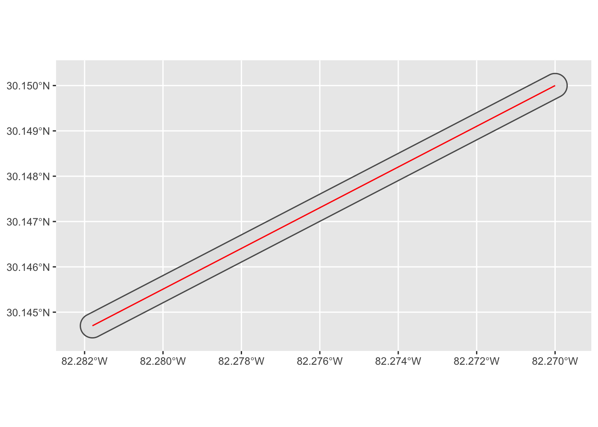
There are two ‘local’ clusters one in the north and one in the south. But overall the events appear to be more regular (inhibition) than CSR.
Interpretation of the process that created the event locations based on \(K\) would be that the arrangement of events is CSR.
X |>
Kest() |>
as.data.frame() |>
ggplot(mapping = aes(x = r, y = iso)) +
geom_line() +
geom_line(aes(y = theo), color = "red") +
xlab("Lag distance (km)") + ylab("K(r)") +
theme_minimal()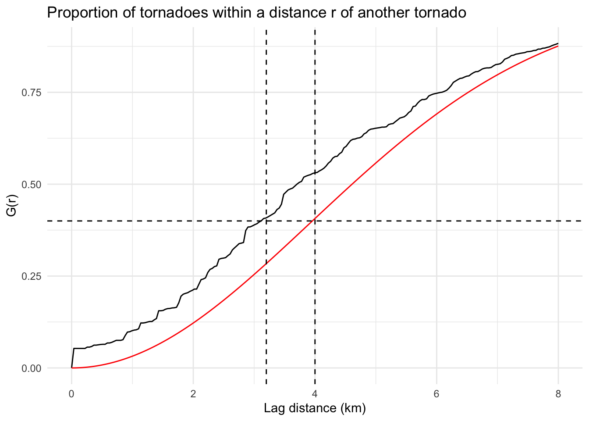
The empirical curve (black line) coincides with the theoretical CSR line (red line) indicating CSR
And the maximum absolute deviation test under the null hypothesis of CSR returns a large \(p\)-value so you fail to reject it
X |>
mad.test(fun = Kest,
nsim = 99)## Generating 99 simulations of CSR ...
## 1, 2, 3, 4, 5, 6, 7, 8, 9, 10, 11, 12, 13, 14, 15, 16, 17, 18, 19, 20, 21, 22, 23, 24, 25, 26, 27, 28, 29, 30, 31, 32, 33, 34, 35, 36, 37, 38, 39, 40,
## 41, 42, 43, 44, 45, 46, 47, 48, 49, 50, 51, 52, 53, 54, 55, 56, 57, 58, 59, 60, 61, 62, 63, 64, 65, 66, 67, 68, 69, 70, 71, 72, 73, 74, 75, 76, 77, 78, 79, 80,
## 81, 82, 83, 84, 85, 86, 87, 88, 89, 90, 91, 92, 93, 94, 95, 96, 97, 98, 99.
##
## Done.##
## Maximum absolute deviation test of CSR
## Monte Carlo test based on 99 simulations
## Summary function: K(r)
## Reference function: theoretical
## Alternative: two.sided
## Interval of distance values: [0, 0.25]
## Test statistic: Maximum absolute deviation
## Deviation = observed minus theoretical
##
## data: X
## mad = 0.0023931, rank = 87, p-value = 0.87As an example of the former case, here you generate event locations that have no inter-event interaction but there is a trend in the spatial intensity
X <- rpoispp(function(x, y){ 300 * exp(-3 * x) })
X |>
plot(main = "") 
By design there is a clear trend toward fewer events moving toward the east
You compute and plot the \(K\) function on these event locations
X |>
Kest() |>
as.data.frame() |>
ggplot(mapping = aes(x = r, y = iso)) +
geom_line() +
geom_line(aes(y = theo), color = "red") +
xlab("Lag distance (km)") + ylab("K(r)") +
theme_minimal()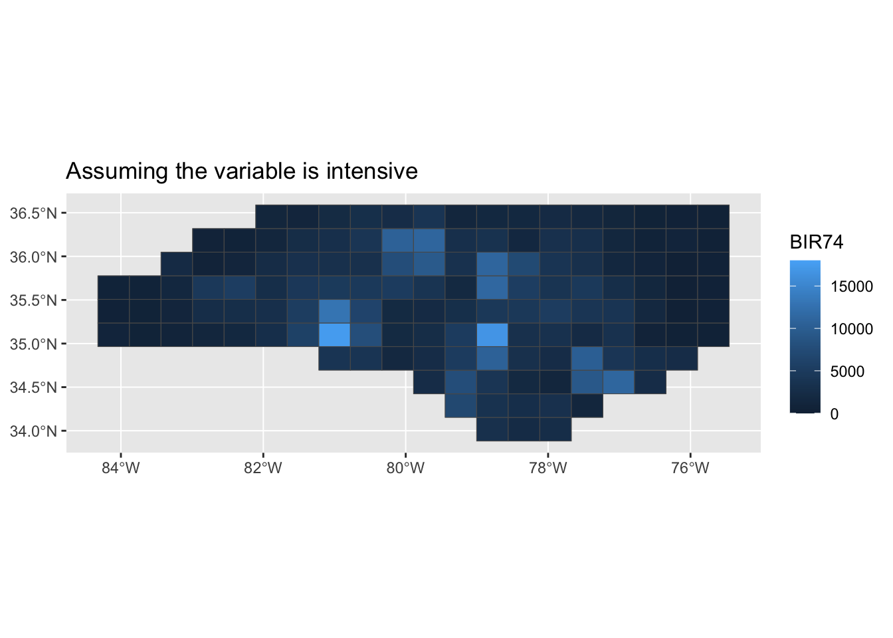
The \(K\) function indicates clustering but this is an artifact of the trend in the intensity
In the case of a known trend in the spatial intensity, you need to use the Kinhom() function. For example, compare the uncertainty envelopes from a homogeneous and inhomogeneous Poisson process
Start by plotting the output from the envelope() function with fun = Kest. The global = TRUE argument indicates that the envelopes are simultaneous rather than point-wise (global = FALSE which is the default). Point-wise envelopes assume the estimates are independent (usually not a good assumption) across the range of distances so the standard errors will be smaller resulting in narrower bands
envelope(X,
fun = Kest,
nsim = 999,
rank = 1,
global = TRUE) |>
as.data.frame() |>
ggplot(mapping = aes(x = r, y = obs)) +
geom_ribbon(mapping = aes(ymin = lo, ymax = hi),
fill = "gray70") +
geom_line() +
geom_line(mapping = aes(y = theo),
color = "red", lty = 'dashed') +
xlab("Lag distance (km)") + ylab("K(r)") +
theme_minimal()## Generating 999 simulations of CSR ...
## 1, 2, 3, ......10.........20.........30.........40.........50.........60........
## .70.........80.........90.........100.........110.........120.........130......
## ...140.........150.........160.........170.........180.........190.........200....
## .....210.........220.........230.........240.........250.........260.........270..
## .......280.........290.........300.........310.........320.........330.........340
## .........350.........360.........370.........380.........390.........400........
## .410.........420.........430.........440.........450.........460.........470......
## ...480.........490.........500.........510.........520.........530.........540....
## .....550.........560.........570.........580.........590.........600.........610..
## .......620.........630.........640.........650.........660.........670.........680
## .........690.........700.........710.........720.........730.........740........
## .750.........760.........770.........780.........790.........800.........810......
## ...820.........830.........840.........850.........860.........870.........880....
## .....890.........900.........910.........920.........930.........940.........950..
## .......960.........970.........980.........990........ 999.
##
## Done.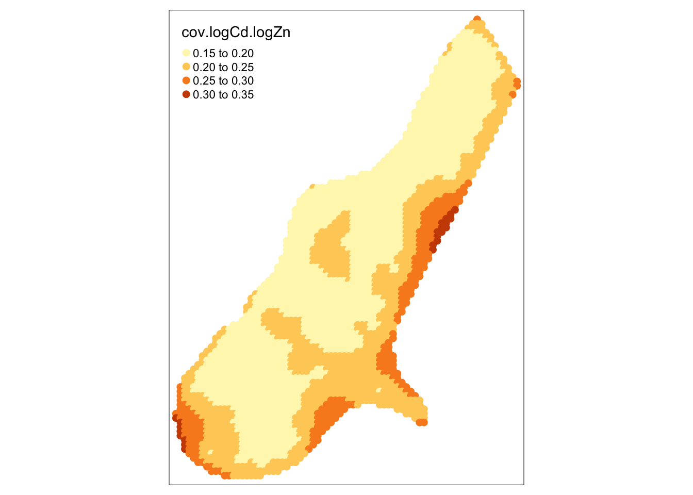
After a distance of about .15 units the empirical curve (black line) is outside the uncertainty band indicating the events are more clustered than CSR
However when you use the fun = Kinhom the empirical curve is completely inside the uncertainty band
envelope(X,
fun = Kinhom,
nsim = 999,
rank = 1,
global = TRUE) |>
as.data.frame() |>
ggplot(mapping = aes(x = r, y = obs)) +
geom_ribbon(mapping = aes(ymin = lo, ymax = hi),
fill = "gray70") +
geom_line() +
geom_line(mapping = aes(y = theo),
color = "red", lty = 'dashed') +
xlab("Lag distance (km)") + ylab("K(r)") +
theme_minimal()## Generating 999 simulations of CSR ...
## 1, 2, 3, ......10.........20.........30.........40.........50.........60........
## .70.........80.........90.........100.........110.........120.........130......
## ...140.........150.........160.........170.........180.........190.........200....
## .....210.........220.........230.........240.........250.........260.........270..
## .......280.........290.........300.........310.........320.........330.........340
## .........350.........360.........370.........380.........390.........400........
## .410.........420.........430.........440.........450.........460.........470......
## ...480.........490.........500.........510.........520.........530.........540....
## .....550.........560.........570.........580.........590.........600.........610..
## .......620.........630.........640.........650.........660.........670.........680
## .........690.........700.........710.........720.........730.........740........
## .750.........760.........770.........780.........790.........800.........810......
## ...820.........830.........840.........850.........860.........870.........880....
## .....890.........900.........910.........920.........930.........940.........950..
## .......960.........970.........980.........990........ 999.
##
## Done.
You conclude that the point pattern data are more consistent with an inhomogeneous Poisson process
Let’s return to the Kansas tornadoes (EF1+). You imported the data and created a point pattern object windowed by the state borders
ST.ppp |>
plot()
There are more tornado reports in the west than in the east, especially across the southern part of the state indicating the process producing the events is not homogeneous. This means there are other factors contributing to local event intensity
Evidence for clustering must account for this inhomogeneity. Here you do this by computing the envelope around the inhomogeneous Ripley K function using the argument fun = Kinhom
envelope(ST.ppp,
fun = Kinhom,
nsim = 99,
rank = 1,
global = TRUE) |>
as.data.frame() |>
ggplot(mapping = aes(x = r, y = obs)) +
geom_ribbon(mapping = aes(ymin = lo, ymax = hi),
fill = "gray70") +
geom_line() +
geom_line(mapping = aes(y = theo),
color = "red", lty = 'dashed') +
xlab("Lag distance (km)") + ylab("K(r)") +
theme_minimal()## Generating 99 simulations of CSR ...
## 1, 2, 3, 4, 5, 6, 7, 8, 9, 10, 11, 12, 13, 14, 15, 16, 17, 18, 19, 20, 21, 22, 23, 24, 25, 26, 27, 28, 29, 30, 31, 32, 33, 34, 35, 36, 37, 38, 39, 40,
## 41, 42, 43, 44, 45, 46, 47, 48, 49, 50, 51, 52, 53, 54, 55, 56, 57, 58, 59, 60, 61, 62, 63, 64, 65, 66, 67, 68, 69, 70, 71, 72, 73, 74, 75, 76, 77, 78, 79, 80,
## 81, 82, 83, 84, 85, 86, 87, 88, 89, 90, 91, 92, 93, 94, 95, 96, 97, 98, 99.
##
## Done.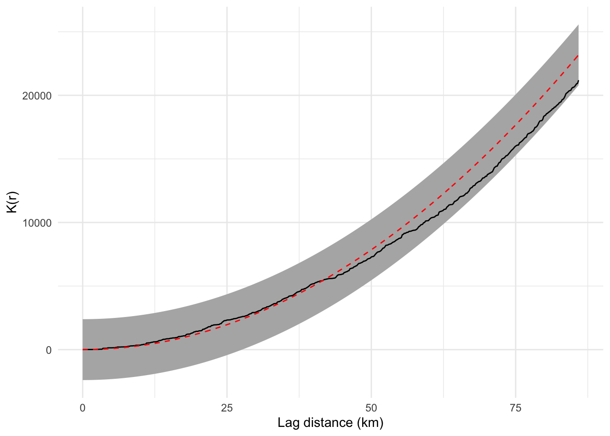
The output reveals no evidence of clustering at distances less than about 70 km. At greater distances there is some evidence of regularity indicated by the black line below the red line and just outside the uncertainty ribbon. This is due to the fact that tornado reports are more common near cities and towns and cities and towns tend to be spread out more regular than CSR
Finally, the variance stabilized Ripley \(K\) function called the \(L\) function is often used instead of \(K\). The sample version of \(L\) is defined as
\[ \hat{L}(r) = \Big( \hat{K}(r)/\pi\Big)^{1/2} \]
For data that is CSR, the \(L\) function has expected value \(r\) and its variance is approximately constant in \(r\). A common plot is a graph of \(r - \hat{L}(r)\) against \(r\), which approximately follows the horizontal zero-axis with constant dispersion if the data follow a homogeneous Poisson process